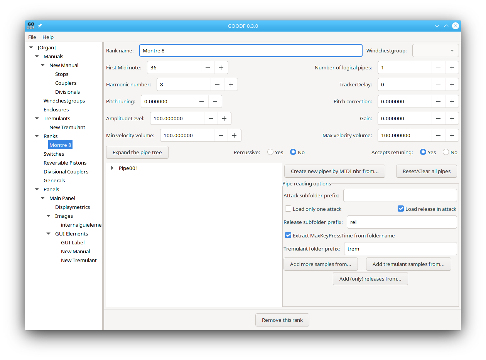
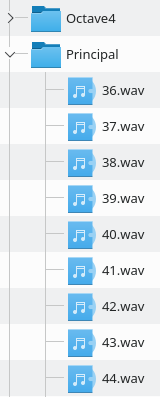
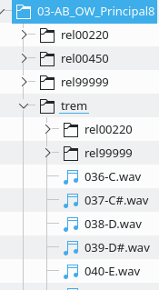
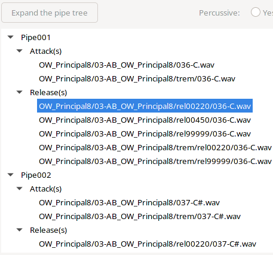
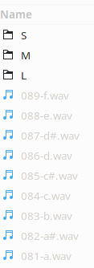
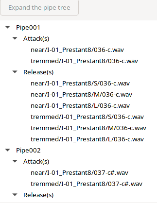
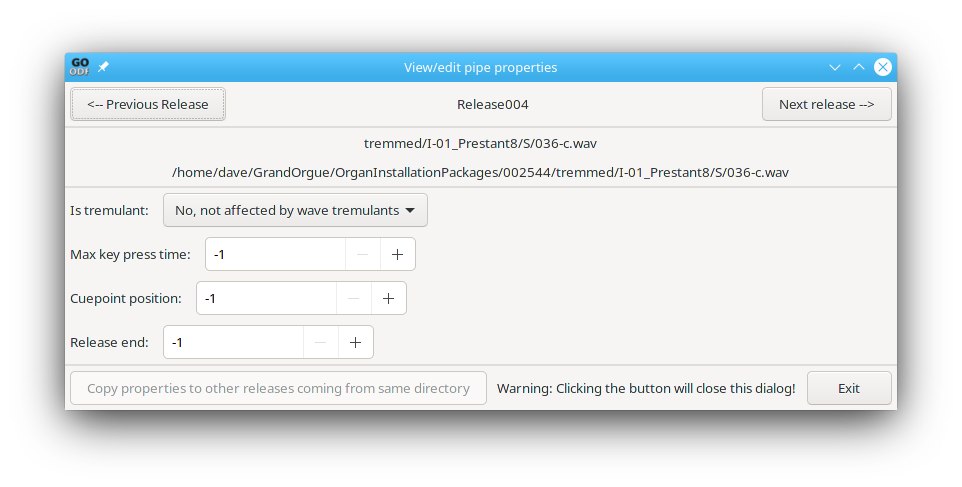
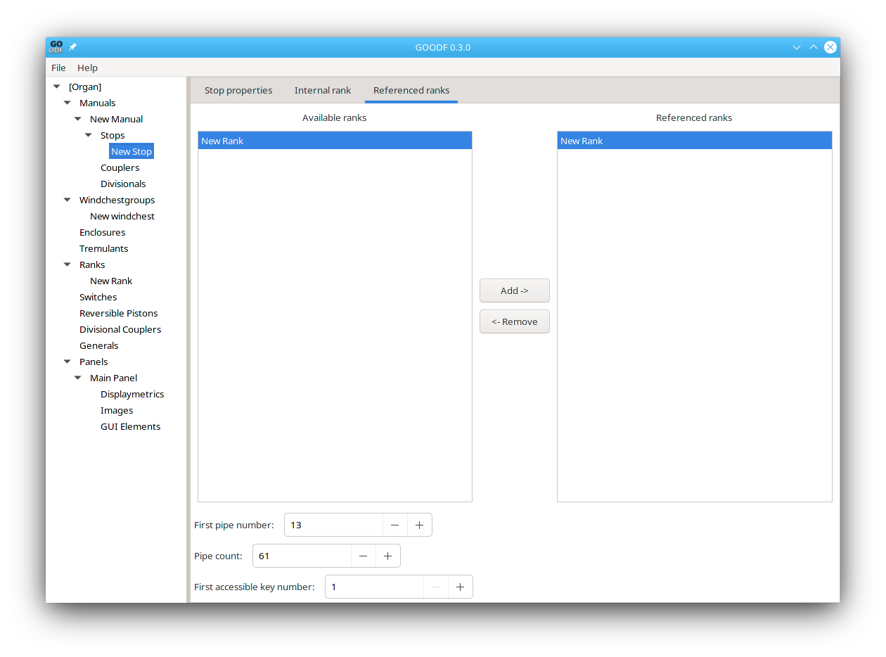
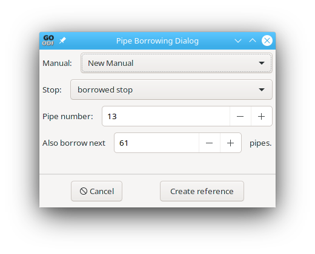
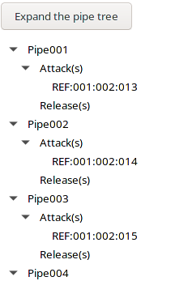

If you are concerned about your Organ GUI, it may be better to define the stops or ranks, but not load samples until after the GUI is complete and as you expect. This will allow GrandOrgue to quickly load and display the GUI without loading any pipes. Of course, if you’ve already loaded the pipes, then you can select Don’t Load In the GrandOrgue setting Load Stereo Samples in: pulldown to get the same behavior.
Samples are used to create one or more ranks. To import samples, you first need to create a rank object (either internal to an already defined stop, or external as an independent rank.) If you are only importing one stereo attack sample per pipe or a stereo untremmed sample and a tremmed sample, it is fine to use the rank internal to a stop. For surround it is best to create a separate rank for each sampled location, as this allows you to put them on separate windchests to allow easy control of relative volume. Before beginning make sure you have properly set the Location of the Organ file (top line) in the [Organ] object.
Shown here is the GOODF window when you create and select a rank

First Understand how your samples are organized. Then follow one of the procedures below. (Read through all the procedures, since steps performed in the first procedure are assumed in subsequent procedures unless otherwise noted) :
In the easiest case there is only one sample per note, and the release sample is included in the attack sample. The Midi note number is contained in the sample name. In this case you would use the following procedure:

Set the First Midi Note to the number in the name of the sample. Typically 36, since this is normally the lowest note on a keyboard, but sometimes it will be 24 if sub-octave samples are included.
Set the number of logical pipes to the number of sample files.
Leave Percussive and Accepts Re-tuning, in their default state.
Set the Harmonic number to a value equal to 64/pitch length. Thus for an eight foot stop, it is set to 8, for a 4’ stop it is set to 16, for a 32 foot stop it is set to 2
make sure the Load release in attack check box is selected
Click the Create new pipes by midi nbr from… button. A window will pop up for you to select the directory with your samples. Make sure this directory is in a relative location to the .organ file you are going to create that will be its final location. Normally you place the samples in a subdirectory of the GrandOrgue/Organs/organname/ or in the /Organ packages/organnumber/ .
When you select the directory and click open, you should then be able to click the Expand the pipe tree button, and see the Attack(s) populated with filenames.
A very common occurrence is to have a single attack sample, then multiple separate release samples in subsidiary directories where the directories are are named rel0180, rel0400, … , rel9999. There may also be a subdirectory with tremulant samples.

In this scenarios repeat the steps above, but make sure the Load release in attack check box is unchecked, and the Extract MaxKeyPressTime from foldername checkbox is checked. Make sure the Release subfolder prefix is set correctly If there are tremulant samples make sure the Tremulant folder prefix is set correctly. Now when you press the Create new pipes by midi nbr from… button, you should see the pipes populated with an attack, and multiple releases, or in the case of the existence of a Trem, two attack samples. (Be wary of directories labeled ‘trem’ since many Hauptwerk sample sets do not store the tremulant samples here, but instead a small number of .wav files that define a simulated tremulant.)
When the samples are imported you should be able to use the Expand the pipe tree button and see that each pipe has at least one normal attack, and a tremmed attack if there was a trem directory. You should see multiple release files, both normal and tremmed. You can right click on the pipeXXX to add more samples or on individual samples to view or change their properties. Note that when imported using this method the normal attacks and releases will show ‘Play when wave tremulant is off’ and the tremmed attack and release samples will show ‘play when wave tremulant is on’ when right clicking on the sample:
more information on editing pipes and samples in in the next section


Odd sample configurations occur when release samples do not include the release time (they may, for example have directories named S,M,L for short, medium, long.) Tremmed samples may be in a completely different directory structure rather than in a subdirectory under the non tremmed attacks. In these sort of cases the samples must be imported and edited manually. Typically this process begins by clearing the release and trem folder prefixes in the rank window, then using the Create new pipes by MIDI nbr from… button to import the non tremmed attack samples.
Next import the three normal release sample directories one by one using the Add (only) releases from … button Next import the Tremulant attack samples by using the Add tremulant samples from … button. Finally add the tremmed releases one by one using the Add (only) releases from … button.
Your pipe tree should now look something like this:

You next need to edit the samples in the pipe trees to correct their properties For example all the non tremmed samples (attack and release)will be configured as ‘No, not affected by wave tremulants’, and must be changed to ‘Play when wave tremulant is off’.
While the tremmed attacks will be properly configured as ‘play when wave tremulant is on’, the tremmed releases will need to be changed to this
Finally, all the releases except the longest will need to have their MAX key press time: value set. You may need to guess at the correct number, or you may find it by parsing any existing organ definition files that use these samples in either GrandOrgue or Hauptwerk. There are open source programs to look into the internals of both these ODF formats and allow easy navigation to the data you want.
Some sample sets may employ multiple attacks as well as releases. The attack sample is chosen either by the velocity in the Midi message to the manual key controlling that pipe, by the time since that note was last released, or randomly. See Pipes for more information.

The window above pops up when you right click on a release sample in the expanded pipe tree. It is possible to change all the samples from the same directory at once. You will see a grayed out button called Copy properties to other releases (or attacks) from same directory. Once you make a change and exit from the data entry box this button will become active. When you press it it will apply your changes not only to the selected release (or attack) sample, but also to all the samples that were loaded from the same directory or subdirectory.
In many organs there may be rank of pipes that includes enough pipes for 16,8,and 4 foot stops. Alternatively, you may want to use the same rank on multiple manuals. You can do this by defining a single rank object with the full set of pipes, then reference the proper subset of pipes from that rank in each stop that uses it. Below we see the rank borrowed in the stop Referenced Ranks tab. You can see we start with the 13th note in the rank, borrow 61 pipes, and assign them starting with key 1 of the stop’s associated manual:

However there is another way to borrow pipes that doesn’t need external ranks. You can borrow from a rank internal to another stop on the same or another manual. To do this, right click on Pipe001 of the new stop and select Borrow pipe from the pop up menu. The following window pops up allowing you to select the manual, the stop within the manual, and the starting pipe and the number of pipes to borrow

When you click create reference, the expanded pipe tree shows the borrowed pipes, specifying in order, the manual number, the stop number, and the pipe number:
